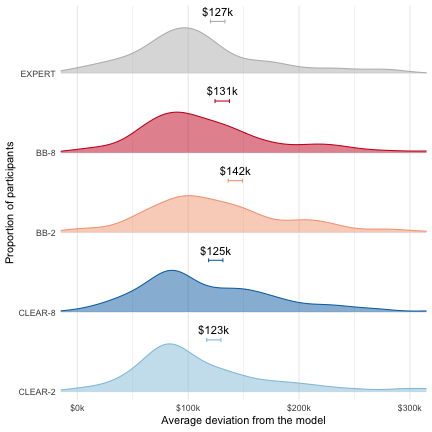

library(lmerTest)
library(lsmeans)
library(scales) library(ggrepel)
library(readr)
library(magrittr) library(dplyr)
## Warning: package 'dplyr' was built under R version 3.5.2
library(tidyr)
library(ggplot2) library(xtable) library(emmeans)
## Warning: package 'emmeans' was built under R version 3.5.2
library(lsr) theme_set(theme_bw()) emm_options(pbkrtest.limit = 12500) emm_options(lmerTest.limit = 12500) my_pallete <- c('#92c5de','#0571b0','#f4a582','#ca0020','#bababa') source('lib.R')
## Warning: package 'tibble' was built under R version 3.5.2
if (!dir.exists('figures/exp3')) dir.create('figures/exp3', recursive = T) # read data woa_responses <- read_csv("data/exp3/data.csv")
# recode conditions and compute outcome measures woa_responses <- woa_responses %>% mutate(condition = recode_factor(as.factor(condition), "C1" = "CLEAR-2", "C3" = "CLEAR-8", "C0" = "BB-2", "C2" = "BB-8", "C4" = "EXPERT")) %>% mutate(pred_err = abs(final_pred - actual_price), deviation = abs(final_pred - model_pred), woa = abs(final_pred - user_init_pred) / abs(model_pred - user_init_pred)) %>% ungroup() ######################################### # histograms ######################################### # users' final prediction breaks <- seq(0,3,1) responses1 <- filter(woa_responses, q_id < 6) responses1$q_id <- responses1$q_id + 1 responses2 <- filter(woa_responses, q_id >= 6) responses2$q_id <- responses2$q_id + 1 # replace -1 for actual price of apartment 12 (synthetic) with NA responses1$actual_price <- replace(responses1$actual_price, which(responses1$actual_price == -1), NA) responses2$actual_price <- replace(responses2$actual_price, which(responses2$actual_price == -1), NA) # shift plot plot_shifts <- function(response_data){ # summary stats plot_data <- response_data %>% group_by(condition, q_id) %>% summarize(mean_user_init_pred = mean(user_init_pred), mean_final_pred = mean(final_pred)) %>% group_by(q_id) %>% arrange(q_id, condition) %>% mutate(y = 1:n()) breaks <- seq(0,3,1) response_data %>% group_by(condition, q_id) %>% filter(user_init_pred >= quantile(user_init_pred, 0.05), user_init_pred <= quantile(user_init_pred, 0.95), final_pred >= quantile(final_pred, 0.05), final_pred <= quantile(final_pred, 0.95)) %>% ungroup() %>% ggplot(aes(x = final_pred, fill = condition, color = condition)) + geom_histogram(aes(x = user_init_pred), alpha = 0.2, linetype = 'dotted', binwidth = 0.1) + geom_histogram(alpha = 0.5, binwidth = 0.1) + geom_point(data = plot_data, aes(x = mean_final_pred, y = 80), shape = 20) + geom_point(data = plot_data, aes(x = mean_user_init_pred, y = 80), shape = 1) + geom_segment(data = plot_data, aes(x = mean_user_init_pred, y = 95, xend = mean_final_pred, yend = 95), arrow = arrow(length = unit(0.03, "npc"))) + geom_vline( alpha = .2, size = .5, aes(xintercept = model_pred, linetype = "Model's prediction")) + geom_vline(alpha=.2, size=.5, aes(xintercept = actual_price, linetype="Actual price"))+ facet_grid(condition ~ q_id, scale = "free_x") + scale_x_continuous(breaks = breaks, labels = sprintf('$%dM', breaks)) + scale_fill_manual(guide = FALSE, values=my_pallete) + scale_colour_manual(guide = FALSE, values=my_pallete) + theme(panel.grid.major = element_blank(), panel.grid.minor = element_blank(), legend.position="top",legend.title = element_blank(), legend.key = element_rect(size = 10), legend.key.size = unit(1.5, 'lines'), legend.text=element_text(size=12), axis.title.x = element_text(size=20), axis.title.y = element_text(size=18), axis.text.x = element_text(angle = 45, size=10), axis.text.y = element_text(size=14), strip.text = element_text(size=14))+ labs(x = "Participants' initial and final predictions", y = "Number of participants") } plot_shifts(responses1)
ggsave(file = 'figures/exp3/shift_histograms_1.pdf', height=10, width=10) plot_shifts(responses2)
## Warning: Removed 877 rows containing missing values (geom_vline).
ggsave(file = 'figures/exp3/shift_histograms_2.pdf', height=10, width=10)
## Warning: Removed 877 rows containing missing values (geom_vline).
# R2: how many subjects think the model underestimates the sale price of the unusual 3 bathroom apt? woa_responses %>% filter(q_id == 11) %>% summarize(mean(user_init_pred < model_pred))
## # A tibble: 1 x 1 ## `mean(user_init_pred < model_pred)` ## <dbl> ## 1 0.888
woa_responses %>% filter(q_id == 11) %>% summarize(mean(user_init_pred > model_pred))
## # A tibble: 1 x 1 ## `mean(user_init_pred > model_pred)` ## <dbl> ## 1 0.0721
# R2: How many choose the midpoint of the scale? The ends? breaks <- seq(0,3,1) woa_responses %>% count(user_init_pred) %>% mutate(frac = n / sum(n)) %>% ggplot(aes(x = user_init_pred, y = frac)) + scale_x_continuous(breaks = breaks, labels = sprintf('$%dM', breaks)) + geom_bar(stat = "identity")+ xlab("Participants' initial prediction")+ ylab("Fraction of responses")+ theme(legend.position="bottom",axis.title.x = element_text(size=14), axis.title.y = element_text(size=18), axis.text.x = element_text(size=9), axis.text.y = element_text(size=14), legend.text=element_text(size=9), legend.title = element_blank(), legend.spacing.x=unit(0.5,"line"), legend.margin=margin(t=-.5, r=0, b=0, l=0, unit="cm"), strip.text = element_text(size=9))+ ggsave('figures/exp3/init_pred_hist.jpg', height=4, width=6)
nrow(woa_responses[woa_responses$user_init_pred == 0,])
## [1] 0
nrow(woa_responses[woa_responses$user_init_pred == 3,])
## [1] 45
nrow(woa_responses[woa_responses$user_init_pred == 1.5,])
## [1] 626
########## # limit everything to first 10 questions for now woa_responses_normal <- filter(woa_responses, q_id < 10) model_expert_data <- filter(woa_responses_normal, q_id < 10)%>% mutate(transparency = ifelse(condition == "CLEAR-2" | condition == "CLEAR-8", "CLEAR", "BB")) %>% mutate(num_features = ifelse(condition == "CLEAR-2" | condition == "BB-2", "two", "eight")) ######################################## # prediction error ######################################## model_data <- filter(model_expert_data, condition != "EXPERT") hlm_model <- lmer(pred_err ~ transparency*num_features + (1|worker_id), data=model_data) summary(hlm_model)
## Linear mixed model fit by REML. t-tests use Satterthwaite's method ['lmerModLmerTest'] ## Formula: pred_err ~ transparency * num_features + (1 | worker_id) ## Data: model_data ## ## REML criterion at convergence: -4522.6 ## ## Scaled residuals: ## Min 1Q Median 3Q Max ## -2.0450 -0.6638 -0.1195 0.4750 9.2910 ## ## Random effects: ## Groups Name Variance Std.Dev. ## worker_id (Intercept) 0.001278 0.03574 ## Residual 0.032089 0.17913 ## Number of obs: 8020, groups: worker_id, 802 ## ## Fixed effects: ## Estimate Std. Error df t value Pr(>|t|) ## (Intercept) 0.217980 0.004760 798.000013 45.793 <2e-16 *** ## transparencyCLEAR 0.002870 0.006715 798.000010 0.427 0.669 ## num_featurestwo 0.008456 0.006698 798.000010 1.262 0.207 ## transparencyCLEAR:num_featurestwo -0.007771 0.009461 798.000008 -0.821 0.412 ## --- ## Signif. codes: 0 '***' 0.001 '**' 0.01 '*' 0.05 '.' 0.1 ' ' 1 ## ## Correlation of Fixed Effects: ## (Intr) trCLEAR nm_ftr ## trnsprCLEAR -0.709 ## num_fetrstw -0.711 0.504 ## trnsCLEAR:_ 0.503 -0.710 -0.708
# get the marginal means for all combinations of transparency and number of features means <- emmeans(hlm_model, c("transparency", "num_features")) # setup contrasts # clear vs. bb clist <- list(clear_vs_bb = c(-1, 1, -1, 1)) emmeans::contrast(means, clist)
## contrast estimate SE df t.ratio p.value ## clear_vs_bb -0.00203 0.00946 798 -0.215 0.8301
######################################## # deviation ######################################## model_data <- filter(model_expert_data, condition != "EXPERT") # clear2 vs bb8 hlm_model <- lmer(deviation ~ transparency*num_features + (1|worker_id), data=model_data) summary(hlm_model)
## Linear mixed model fit by REML. t-tests use Satterthwaite's method ['lmerModLmerTest'] ## Formula: deviation ~ transparency * num_features + (1 | worker_id) ## Data: model_data ## ## REML criterion at convergence: -9160.7 ## ## Scaled residuals: ## Min 1Q Median 3Q Max ## -4.0573 -0.6125 -0.1010 0.3173 9.4149 ## ## Random effects: ## Groups Name Variance Std.Dev. ## worker_id (Intercept) 0.006002 0.07747 ## Residual 0.015923 0.12619 ## Number of obs: 8020, groups: worker_id, 802 ## ## Fixed effects: ## Estimate Std. Error df t value Pr(>|t|) ## (Intercept) 0.130707 0.006193 797.999185 21.105 <2e-16 *** ## transparencyCLEAR -0.005857 0.008736 797.999199 -0.670 0.503 ## num_featurestwo 0.011768 0.008715 797.999199 1.350 0.177 ## transparencyCLEAR:num_featurestwo -0.013499 0.012309 797.999204 -1.097 0.273 ## --- ## Signif. codes: 0 '***' 0.001 '**' 0.01 '*' 0.05 '.' 0.1 ' ' 1 ## ## Correlation of Fixed Effects: ## (Intr) trCLEAR nm_ftr ## trnsprCLEAR -0.709 ## num_fetrstw -0.711 0.504 ## trnsCLEAR:_ 0.503 -0.710 -0.708
# look at ANOVA anova_table <- anova(hlm_model) # export in LaTEX format xtable(anova_table)
## % latex table generated in R 3.5.1 by xtable 1.8-2 package
## % Fri Jan 8 17:58:49 2021
## \begin{table}[ht]
## \centering
## \begin{tabular}{lrrrrrr}
## \hline
## & Sum Sq & Mean Sq & NumDF & DenDF & F value & Pr($>$F) \\
## \hline
## transparency & 0.07 & 0.07 & 1.00 & 798.00 & 4.20 & 0.0409 \\
## num\_features & 0.01 & 0.01 & 1.00 & 798.00 & 0.66 & 0.4151 \\
## transparency:num\_features & 0.02 & 0.02 & 1.00 & 798.00 & 1.20 & 0.2731 \\
## \hline
## \end{tabular}
## \end{table}
# get the marginal means for all combinations of transparency and number of features means <- emmeans(hlm_model, c("transparency", "num_features")) # setup contrasts clist <- list(clear2_vs_bb8 = c(-1, 0, 0, 1)) emmeans::contrast(means, clist)
## contrast estimate SE df t.ratio p.value ## clear2_vs_bb8 -0.00759 0.00871 798 -0.871 0.3842
# POST-HOC: clear-2 else clist <- list(clear2_vs_else = c(-1, -1, -1, 3)) emmeans::contrast(means, clist)
## contrast estimate SE df t.ratio p.value ## clear2_vs_else -0.0287 0.0213 798 -1.348 0.1779
# bb8 vs EXPERT hlm_model <- lmer(deviation ~ condition + (1|worker_id), data=model_expert_data) summary(hlm_model)
## Linear mixed model fit by REML. t-tests use Satterthwaite's method ['lmerModLmerTest'] ## Formula: deviation ~ condition + (1 | worker_id) ## Data: model_expert_data ## ## REML criterion at convergence: -11377.8 ## ## Scaled residuals: ## Min 1Q Median 3Q Max ## -5.4543 -0.6006 -0.1045 0.3039 9.3717 ## ## Random effects: ## Groups Name Variance Std.Dev. ## worker_id (Intercept) 0.006767 0.08226 ## Residual 0.015815 0.12576 ## Number of obs: 9990, groups: worker_id, 999 ## ## Fixed effects: ## Estimate Std. Error df t value Pr(>|t|) ## (Intercept) 1.231e-01 6.429e-03 9.940e+02 19.151 <2e-16 *** ## conditionCLEAR-8 1.731e-03 9.115e-03 9.940e+02 0.190 0.8494 ## conditionBB-2 1.936e-02 9.092e-03 9.940e+02 2.129 0.0335 * ## conditionBB-8 7.588e-03 9.138e-03 9.940e+02 0.830 0.4065 ## conditionEXPERT 3.480e-03 9.149e-03 9.940e+02 0.380 0.7038 ## --- ## Signif. codes: 0 '***' 0.001 '**' 0.01 '*' 0.05 '.' 0.1 ' ' 1 ## ## Correlation of Fixed Effects: ## (Intr) cCLEAR cnBB-2 cnBB-8 ## cndtCLEAR-8 -0.705 ## conditnBB-2 -0.707 0.499 ## conditnBB-8 -0.704 0.496 0.497 ## cndtnEXPERT -0.703 0.496 0.497 0.494
# look at ANOVA anova_table <- anova(hlm_model) # export in LaTEX format xtable(anova_table)
## % latex table generated in R 3.5.1 by xtable 1.8-2 package
## % Fri Jan 8 17:58:49 2021
## \begin{table}[ht]
## \centering
## \begin{tabular}{lrrrrrr}
## \hline
## & Sum Sq & Mean Sq & NumDF & DenDF & F value & Pr($>$F) \\
## \hline
## condition & 0.09 & 0.02 & 4.00 & 994.00 & 1.45 & 0.2148 \\
## \hline
## \end{tabular}
## \end{table}
# get the marginal means for all combinations of transparency and number of features means <- emmeans(hlm_model, "condition") # setup contrasts clist <- list(bb8_vs_expert = c(0, 0, 0, 1, -1)) emmeans::contrast(means, clist)
## contrast estimate SE df t.ratio p.value ## bb8_vs_expert 0.00411 0.00919 994 0.447 0.6551
# compute the means and standard errors by condition from the model hlm_model <- lmer(deviation ~ condition + (1 | worker_id), data = model_expert_data) means <- lsmeansLT(hlm_model, "condition") model_expert_data %>% mutate(outcome = deviation * 1e3) %>% plot_distributions_with_means(., 'Average deviation from the model', 'Proportion of participants', my_pallete)
## Warning: Ignoring unknown aesthetics: x
## Warning: The plyr::rename operation has created duplicates for the following name(s): ## (`size`)

ggsave(file = 'figures/exp3/dev_from_model.pdf', height = 4.5, width = 4)
######################################## # WEIGHT OF ADVICE ######################################## # keeping only finite (non Inf/NA) woa values model_expert_data_woa <- filter(model_expert_data, is.finite(woa)) model_data_woa <- filter(model_expert_data_woa, condition != "EXPERT") # clear2 vs bb8 hlm_model <- lmer(woa ~ transparency*num_features + (1|worker_id), data=model_data_woa) summary(hlm_model)
## Linear mixed model fit by REML. t-tests use Satterthwaite's method ['lmerModLmerTest'] ## Formula: woa ~ transparency * num_features + (1 | worker_id) ## Data: model_data_woa ## ## REML criterion at convergence: 9594.8 ## ## Scaled residuals: ## Min 1Q Median 3Q Max ## -3.9891 -0.5647 -0.0357 0.4674 10.8070 ## ## Random effects: ## Groups Name Variance Std.Dev. ## worker_id (Intercept) 0.05041 0.2245 ## Residual 0.20449 0.4522 ## Number of obs: 6927, groups: worker_id, 802 ## ## Fixed effects: ## Estimate Std. Error df t value Pr(>|t|) ## (Intercept) 0.60350 0.01932 807.84408 31.235 <2e-16 *** ## transparencyCLEAR 0.03822 0.02728 809.88236 1.401 0.1616 ## num_featurestwo -0.05181 0.02725 814.60662 -1.901 0.0576 . ## transparencyCLEAR:num_featurestwo 0.04823 0.03853 817.77441 1.252 0.2109 ## --- ## Signif. codes: 0 '***' 0.001 '**' 0.01 '*' 0.05 '.' 0.1 ' ' 1 ## ## Correlation of Fixed Effects: ## (Intr) trCLEAR nm_ftr ## trnsprCLEAR -0.708 ## num_fetrstw -0.709 0.502 ## trnsCLEAR:_ 0.502 -0.708 -0.707
# look at ANOVA anova_table <- anova(hlm_model) # export in LaTEX format xtable(anova_table)
## % latex table generated in R 3.5.1 by xtable 1.8-2 package
## % Fri Jan 8 17:58:50 2021
## \begin{table}[ht]
## \centering
## \begin{tabular}{lrrrrrr}
## \hline
## & Sum Sq & Mean Sq & NumDF & DenDF & F value & Pr($>$F) \\
## \hline
## transparency & 2.14 & 2.14 & 1.00 & 817.77 & 10.47 & 0.0013 \\
## num\_features & 0.42 & 0.42 & 1.00 & 817.77 & 2.07 & 0.1509 \\
## transparency:num\_features & 0.32 & 0.32 & 1.00 & 817.77 & 1.57 & 0.2109 \\
## \hline
## \end{tabular}
## \end{table}
# get the marginal means for all combinations of transparency and number of features means <- emmeans(hlm_model, c("transparency", "num_features")) # setup contrasts clist <- list(clear2_vs_bb8 = c(-1, 0, 0, 1)) emmeans::contrast(means, clist)
## contrast estimate SE df t.ratio p.value ## clear2_vs_bb8 0.0346 0.0273 819 1.270 0.2045
# clear-2 else clist <- list(clear2_vs_else = c(-1, -1, -1, 3)) emmeans::contrast(means, clist)
## contrast estimate SE df t.ratio p.value ## clear2_vs_else 0.118 0.0667 826 1.761 0.0786
# bb8 vs EXPERT hlm_model <- lmer(woa ~ condition + (1|worker_id), data=model_expert_data_woa) summary(hlm_model)
## Linear mixed model fit by REML. t-tests use Satterthwaite's method ['lmerModLmerTest'] ## Formula: woa ~ condition + (1 | worker_id) ## Data: model_expert_data_woa ## ## REML criterion at convergence: 11517 ## ## Scaled residuals: ## Min 1Q Median 3Q Max ## -4.0890 -0.5558 -0.0275 0.4762 11.0996 ## ## Random effects: ## Groups Name Variance Std.Dev. ## worker_id (Intercept) 0.04742 0.2178 ## Residual 0.19395 0.4404 ## Number of obs: 8650, groups: worker_id, 999 ## ## Fixed effects: ## Estimate Std. Error df t value Pr(>|t|) ## (Intercept) 6.381e-01 1.871e-02 1.031e+03 34.113 <2e-16 *** ## conditionCLEAR-8 3.575e-03 2.645e-02 1.019e+03 0.135 0.8925 ## conditionBB-2 -8.646e-02 2.642e-02 1.025e+03 -3.272 0.0011 ** ## conditionBB-8 -3.465e-02 2.650e-02 1.017e+03 -1.308 0.1913 ## conditionEXPERT -2.458e-02 2.655e-02 1.019e+03 -0.926 0.3548 ## --- ## Signif. codes: 0 '***' 0.001 '**' 0.01 '*' 0.05 '.' 0.1 ' ' 1 ## ## Correlation of Fixed Effects: ## (Intr) cCLEAR cnBB-2 cnBB-8 ## cndtCLEAR-8 -0.707 ## conditnBB-2 -0.708 0.501 ## conditnBB-8 -0.706 0.499 0.500 ## cndtnEXPERT -0.705 0.498 0.499 0.498
# look at ANOVA anova_table <- anova(hlm_model) # export in LaTEX format xtable(anova_table)
## % latex table generated in R 3.5.1 by xtable 1.8-2 package
## % Fri Jan 8 17:58:50 2021
## \begin{table}[ht]
## \centering
## \begin{tabular}{lrrrrrr}
## \hline
## & Sum Sq & Mean Sq & NumDF & DenDF & F value & Pr($>$F) \\
## \hline
## condition & 2.92 & 0.73 & 4.00 & 1013.65 & 3.77 & 0.0048 \\
## \hline
## \end{tabular}
## \end{table}
# get the marginal means for all combinations of transparency and number of features means <- emmeans(hlm_model, "condition") # setup contrasts clist <- list(bb8_vs_expert = c(0, 0, 0, 1, -1)) emmeans::contrast(means, clist)
## contrast estimate SE df t.ratio p.value ## bb8_vs_expert -0.0101 0.0266 1005 -0.379 0.7049
hlm_model <- lmer(woa ~ condition + (1 | worker_id), data = model_expert_data_woa) summary(hlm_model)
## Linear mixed model fit by REML. t-tests use Satterthwaite's method ['lmerModLmerTest'] ## Formula: woa ~ condition + (1 | worker_id) ## Data: model_expert_data_woa ## ## REML criterion at convergence: 11517 ## ## Scaled residuals: ## Min 1Q Median 3Q Max ## -4.0890 -0.5558 -0.0275 0.4762 11.0996 ## ## Random effects: ## Groups Name Variance Std.Dev. ## worker_id (Intercept) 0.04742 0.2178 ## Residual 0.19395 0.4404 ## Number of obs: 8650, groups: worker_id, 999 ## ## Fixed effects: ## Estimate Std. Error df t value Pr(>|t|) ## (Intercept) 6.381e-01 1.871e-02 1.031e+03 34.113 <2e-16 *** ## conditionCLEAR-8 3.575e-03 2.645e-02 1.019e+03 0.135 0.8925 ## conditionBB-2 -8.646e-02 2.642e-02 1.025e+03 -3.272 0.0011 ** ## conditionBB-8 -3.465e-02 2.650e-02 1.017e+03 -1.308 0.1913 ## conditionEXPERT -2.458e-02 2.655e-02 1.019e+03 -0.926 0.3548 ## --- ## Signif. codes: 0 '***' 0.001 '**' 0.01 '*' 0.05 '.' 0.1 ' ' 1 ## ## Correlation of Fixed Effects: ## (Intr) cCLEAR cnBB-2 cnBB-8 ## cndtCLEAR-8 -0.707 ## conditnBB-2 -0.708 0.501 ## conditnBB-8 -0.706 0.499 0.500 ## cndtnEXPERT -0.705 0.498 0.499 0.498
model_expert_data_woa %>% mutate(outcome = woa) %>% plot_distributions_with_means(., 'Average weight of advice (WOA)', 'Proportion of participants', my_pallete, label_format = '%.2f')
## Warning: Ignoring unknown aesthetics: x ## Warning: The plyr::rename operation has created duplicates for the following name(s): ## (`size`)

ggsave(file = 'figures/exp3/woa.pdf', height = 4.5, width = 4)
# response to R2 # how many WOA responses are outside of [0,1]? # overall model_data %>% filter(q_id < 10) %>% mutate(woa_bin = case_when( is.finite(woa) & (user_init_pred <= final_pred & final_pred <= model_pred)~ "u1 < u2 < m (woa <= 1)", is.finite(woa) & (final_pred <= user_init_pred & user_init_pred <= model_pred) & woa <= 1 ~ "u2 < u1 < m and woa <= 1", is.finite(woa) & (final_pred <= user_init_pred & user_init_pred <= model_pred) & woa > 1 ~ "u2 < u1 < m and woa > 1", is.finite(woa) & (user_init_pred <= model_pred & model_pred <= final_pred)~ "u1 < m < u2 (woa > 1)", is.finite(woa) & (model_pred <= final_pred & final_pred <= user_init_pred)~ " m < u2 < u1 (woa <= 1)", is.finite(woa) & (final_pred <= model_pred & model_pred <= user_init_pred)~ " u2 < m < u1 (woa > 1)", is.finite(woa) & (model_pred <= user_init_pred & user_init_pred <= final_pred) & woa <= 1 ~ "m < u1 < u2 and woa <= 1", is.finite(woa) & (model_pred <= user_init_pred & user_init_pred <= final_pred) & woa > 1 ~ "m < u1 < u2 and woa > 1", !is.finite(woa) ~ "WOA undefined\n(Initial prediction matched model)", TRUE ~ "Other" )) %>% count(woa_bin) %>% ungroup() %>% mutate(frac_in_bin = n / sum(n), se = sqrt(frac_in_bin * (1 - frac_in_bin) / n))
## # A tibble: 9 x 4 ## woa_bin n frac_in_bin se ## <chr> <int> <dbl> <dbl> ## 1 " m < u2 < u1 (woa <= 1)" 3820 0.476 0.00808 ## 2 " u2 < m < u1 (woa > 1)" 194 0.0242 0.0110 ## 3 "m < u1 < u2 and woa <= 1" 49 0.00611 0.0111 ## 4 "m < u1 < u2 and woa > 1" 33 0.00411 0.0111 ## 5 "u1 < m < u2 (woa > 1)" 224 0.0279 0.0110 ## 6 "u1 < u2 < m (woa <= 1)" 2571 0.321 0.00920 ## 7 "u2 < u1 < m and woa <= 1" 22 0.00274 0.0112 ## 8 "u2 < u1 < m and woa > 1" 14 0.00175 0.0112 ## 9 "WOA undefined\n(Initial prediction matched model)" 1093 0.136 0.0104
#################################### # last two questions (unusual apartments) #################################### woa_responses_unusual <- filter(woa_responses, q_id >= 10) ######################################## # deviation for q11 ######################################## # anova for q11 q11_model_data <- filter(woa_responses_unusual, condition != "EXPERT", q_id == 10)%>% mutate(transparency = ifelse(condition == "CLEAR-2" | condition == "CLEAR-8", "CLEAR", "BB")) %>% mutate(num_features = ifelse(condition == "CLEAR-2" | condition == "BB-2", "two", "eight")) # fit the one factor model lm_model <- lm(deviation ~ condition, data=q11_model_data) summary(lm_model)
## ## Call: ## lm(formula = deviation ~ condition, data = q11_model_data) ## ## Residuals: ## Min 1Q Median 3Q Max ## -0.14901 -0.04901 -0.02980 0.05495 0.67020 ## ## Coefficients: ## Estimate Std. Error t value Pr(>|t|) ## (Intercept) 0.149010 0.008208 18.155 < 2e-16 *** ## conditionCLEAR-8 -0.039010 0.011636 -3.352 0.000839 *** ## conditionBB-2 -0.003960 0.011607 -0.341 0.733045 ## conditionBB-8 -0.019212 0.011666 -1.647 0.099982 . ## --- ## Signif. codes: 0 '***' 0.001 '**' 0.01 '*' 0.05 '.' 0.1 ' ' 1 ## ## Residual standard error: 0.1167 on 798 degrees of freedom ## Multiple R-squared: 0.01708, Adjusted R-squared: 0.01339 ## F-statistic: 4.622 on 3 and 798 DF, p-value: 0.003256
# look at one-way ANOVA anova(lm_model)
## Analysis of Variance Table ## ## Response: deviation ## Df Sum Sq Mean Sq F value Pr(>F) ## condition 3 0.1887 0.062900 4.6223 0.003256 ** ## Residuals 798 10.8590 0.013608 ## --- ## Signif. codes: 0 '***' 0.001 '**' 0.01 '*' 0.05 '.' 0.1 ' ' 1
# run 2-by-2 anova for deviation on q11 # fit the two factor model lm_model <- lm(deviation ~ transparency*num_features, data=q11_model_data) summary(lm_model)
## ## Call: ## lm(formula = deviation ~ transparency * num_features, data = q11_model_data) ## ## Residuals: ## Min 1Q Median 3Q Max ## -0.14901 -0.04901 -0.02980 0.05495 0.67020 ## ## Coefficients: ## Estimate Std. Error t value Pr(>|t|) ## (Intercept) 0.12980 0.00829 15.657 <2e-16 *** ## transparencyCLEAR -0.01980 0.01170 -1.693 0.0909 . ## num_featurestwo 0.01525 0.01167 1.307 0.1915 ## transparencyCLEAR:num_featurestwo 0.02376 0.01648 1.442 0.1497 ## --- ## Signif. codes: 0 '***' 0.001 '**' 0.01 '*' 0.05 '.' 0.1 ' ' 1 ## ## Residual standard error: 0.1167 on 798 degrees of freedom ## Multiple R-squared: 0.01708, Adjusted R-squared: 0.01339 ## F-statistic: 4.622 on 3 and 798 DF, p-value: 0.003256
# look at ANOVA anova_table <- anova(lm_model) # export in LaTEX format xtable(anova_table)
## % latex table generated in R 3.5.1 by xtable 1.8-2 package
## % Fri Jan 8 17:58:51 2021
## \begin{table}[ht]
## \centering
## \begin{tabular}{lrrrrr}
## \hline
## & Df & Sum Sq & Mean Sq & F value & Pr($>$F) \\
## \hline
## transparency & 1 & 0.01 & 0.01 & 0.92 & 0.3380 \\
## num\_features & 1 & 0.15 & 0.15 & 10.87 & 0.0010 \\
## transparency:num\_features & 1 & 0.03 & 0.03 & 2.08 & 0.1497 \\
## Residuals & 798 & 10.86 & 0.01 & & \\
## \hline
## \end{tabular}
## \end{table}
# get the marginal means for all combinations of transparency and number of features means <- emmeans(lm_model, c("transparency", "num_features")) # setup contrasts clist <- list(clear_vs_bb = c(-1, 1, -1, 1)) emmeans::contrast(means, clist)
## contrast estimate SE df t.ratio p.value ## clear_vs_bb -0.0158 0.0165 798 -0.961 0.3368
######################################## # DEVIATION for q12 ######################################## # anova for q12 q12_model_data <- filter(woa_responses_unusual, condition != "EXPERT", q_id == 11)%>% mutate(transparency = ifelse(condition == "CLEAR-2" | condition == "CLEAR-8", "CLEAR", "BB")) %>% mutate(num_features = ifelse(condition == "CLEAR-2" | condition == "BB-2", "two", "eight")) # fit the one factor model lm_model <- lm(deviation ~ condition, data=q12_model_data) summary(lm_model)
## ## Call: ## lm(formula = deviation ~ condition, data = q12_model_data) ## ## Residuals: ## Min 1Q Median 3Q Max ## -0.25891 -0.15347 -0.03582 0.09250 0.94653 ## ## Coefficients: ## Estimate Std. Error t value Pr(>|t|) ## (Intercept) 0.258911 0.013488 19.196 < 2e-16 *** ## conditionCLEAR-8 -0.051411 0.019122 -2.689 0.00733 ** ## conditionBB-2 -0.005446 0.019075 -0.285 0.77535 ## conditionBB-8 -0.040729 0.019171 -2.125 0.03393 * ## --- ## Signif. codes: 0 '***' 0.001 '**' 0.01 '*' 0.05 '.' 0.1 ' ' 1 ## ## Residual standard error: 0.1917 on 798 degrees of freedom ## Multiple R-squared: 0.01318, Adjusted R-squared: 0.009466 ## F-statistic: 3.551 on 3 and 798 DF, p-value: 0.01416
# look at one-way ANOVA anova(lm_model)
## Analysis of Variance Table ## ## Response: deviation ## Df Sum Sq Mean Sq F value Pr(>F) ## condition 3 0.3915 0.130510 3.5515 0.01416 * ## Residuals 798 29.3248 0.036748 ## --- ## Signif. codes: 0 '***' 0.001 '**' 0.01 '*' 0.05 '.' 0.1 ' ' 1
# run 2-by-2 anova for deviation on q11 # fit the two factor model lm_model <- lm(deviation ~ transparency*num_features, data=q12_model_data) summary(lm_model)
## ## Call: ## lm(formula = deviation ~ transparency * num_features, data = q12_model_data) ## ## Residuals: ## Min 1Q Median 3Q Max ## -0.25891 -0.15347 -0.03582 0.09250 0.94653 ## ## Coefficients: ## Estimate Std. Error t value Pr(>|t|) ## (Intercept) 0.21818 0.01362 16.015 <2e-16 *** ## transparencyCLEAR -0.01068 0.01922 -0.556 0.5785 ## num_featurestwo 0.03528 0.01917 1.840 0.0661 . ## transparencyCLEAR:num_featurestwo 0.01613 0.02708 0.596 0.5516 ## --- ## Signif. codes: 0 '***' 0.001 '**' 0.01 '*' 0.05 '.' 0.1 ' ' 1 ## ## Residual standard error: 0.1917 on 798 degrees of freedom ## Multiple R-squared: 0.01318, Adjusted R-squared: 0.009466 ## F-statistic: 3.551 on 3 and 798 DF, p-value: 0.01416
# look at ANOVA anova_table <- anova(lm_model) # export in LaTEX format xtable(anova_table)
## % latex table generated in R 3.5.1 by xtable 1.8-2 package
## % Fri Jan 8 17:58:51 2021
## \begin{table}[ht]
## \centering
## \begin{tabular}{lrrrrr}
## \hline
## & Df & Sum Sq & Mean Sq & F value & Pr($>$F) \\
## \hline
## transparency & 1 & 0.00 & 0.00 & 0.04 & 0.8439 \\
## num\_features & 1 & 0.38 & 0.38 & 10.26 & 0.0014 \\
## transparency:num\_features & 1 & 0.01 & 0.01 & 0.35 & 0.5516 \\
## Residuals & 798 & 29.32 & 0.04 & & \\
## \hline
## \end{tabular}
## \end{table}
# get the marginal means for all combinations of transparency and number of features means <- emmeans(lm_model, c("transparency", "num_features")) # setup contrasts clist <- list(clear_vs_bb = c(-1, 1, -1, 1)) emmeans::contrast(means, clist)
## contrast estimate SE df t.ratio p.value ## clear_vs_bb -0.00524 0.0271 798 -0.193 0.8467